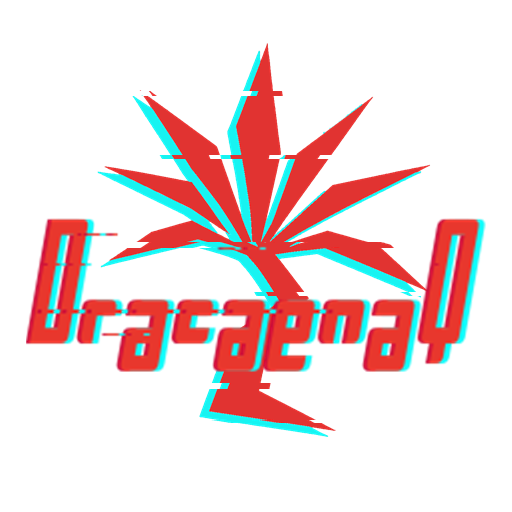
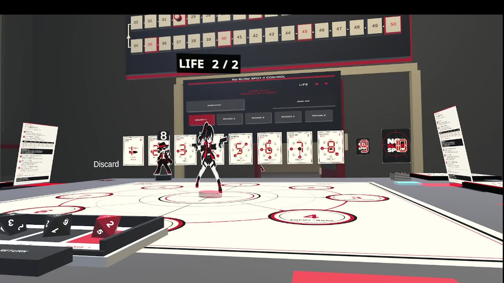
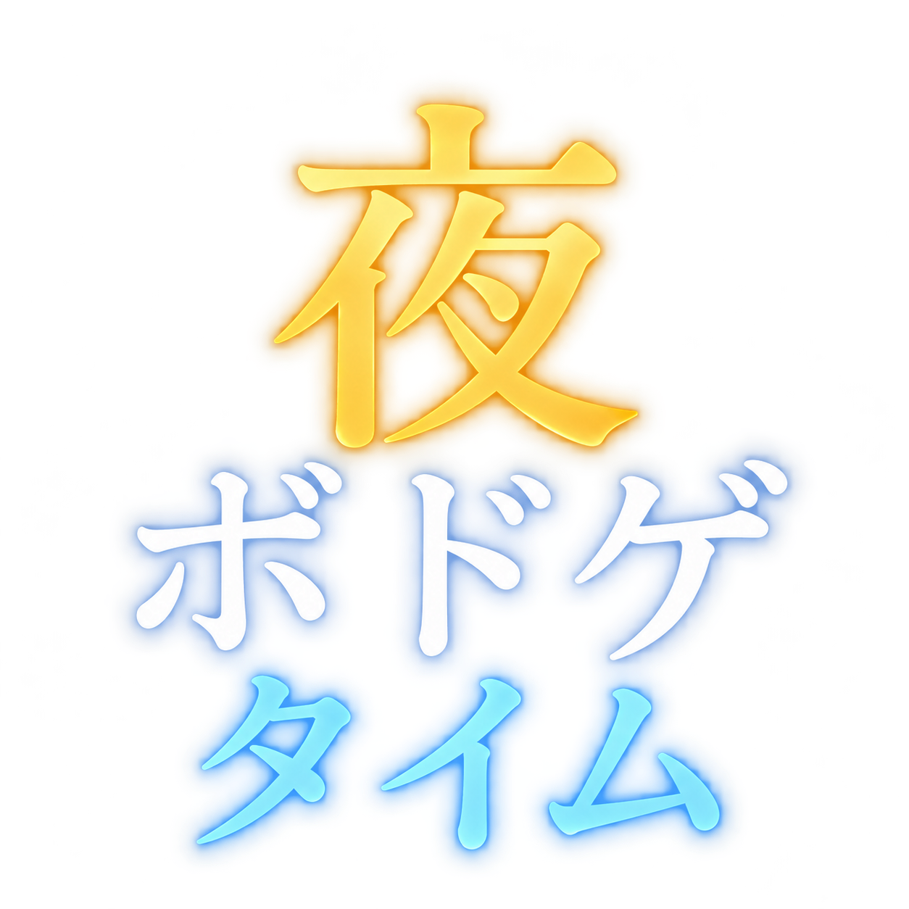

NO BLIND SPOT
Game Design / Unity / UdonSharp
View project ↗
人と人のあいだに、遊びをつくる。
VRChatを中心に、アナログゲーム・ゲームワールド・インタラクティブコンテンツを企画・制作しています。
Game Design / Unity / UdonSharp / VRChat
Explore works ↓
カードを選ぶ。仲間と作戦を立てる。そこは、プレイヤーの仕事。シャッフル、射撃、敵処理、弾薬、スコアはワールドが引き受けます。
アナログゲームの面白さを、仮想世界ならではの体験へ。
Behind NO BLIND SPOT ↗Game Design / Unity / UdonSharp
View project ↗Game Design / Unity / UdonSharp
View project ↗Unity / UdonSharp / World Design
View project ↗つくって、遊んで、またつくる。
VRChatでボードゲームを囲むイベントを運営。オリジナルゲームのテストプレイやコラボレーションを通して、人が集まる遊びの場をつくっています。
VRChat Group ↗
NO BLIND SPOTの再設計、VRChatに合わせた自動化、プレイテストからの改善。制作の考え方を作品ページで紹介しています。
Read the case study ↗Read on note ↗Board Game Design · Prototyping · Playtesting · Rule Design
ルール設計から試作、テストプレイまで。遊びの手触りを検証しながらつくります。
Unity · UdonSharp · VRChat SDK
カードゲームや協力ゲームの進行、自動処理、UIをVRChat向けに実装。
Blender · Affinity
ゲームの世界観に合わせた立体物とビジュアルを制作。
AI-assisted prototyping · Codex · ChatGPT
AIを試作や実装の補助に活用し、プレイテストで体験を確かめます。
アナログゲームの企画からUnity実装、テストプレイ、イベント運営まで。一貫した制作を通して、仮想世界で人が一緒に遊ぶ体験をつくっています。
More about me ↗Employment / Freelance / Collaboration